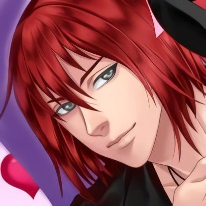
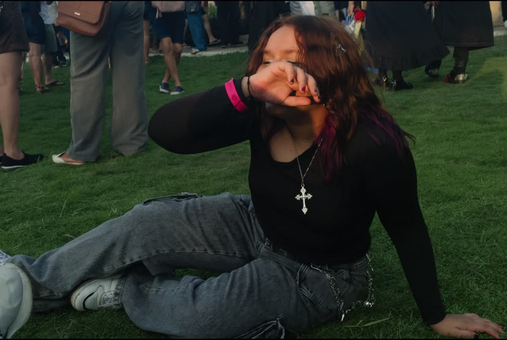
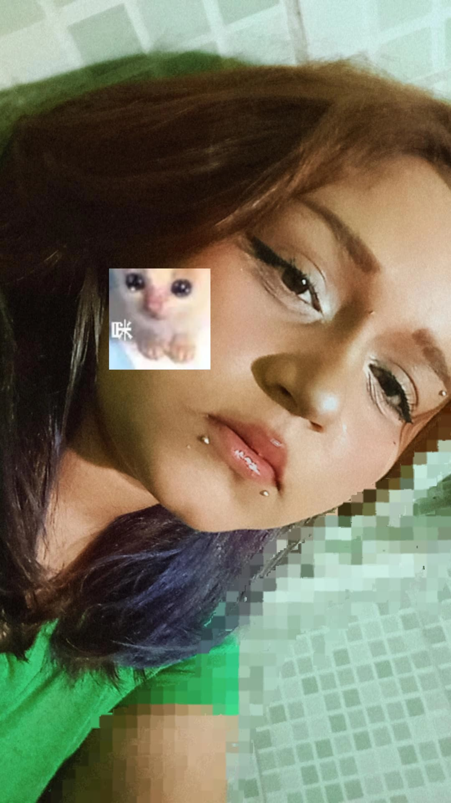
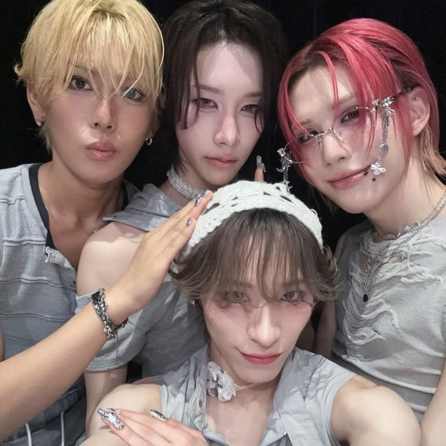
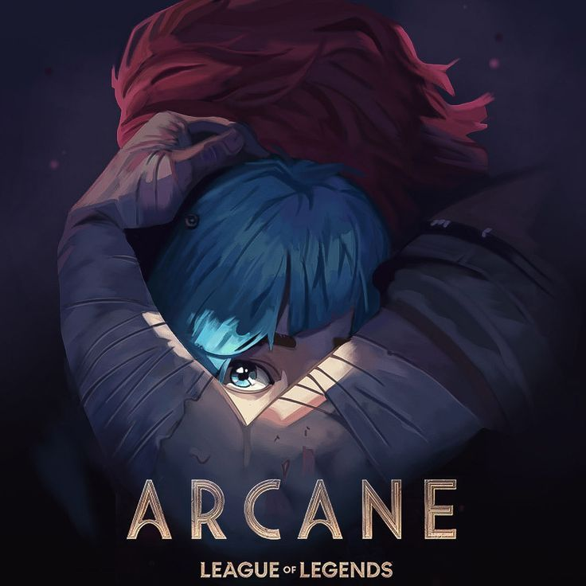
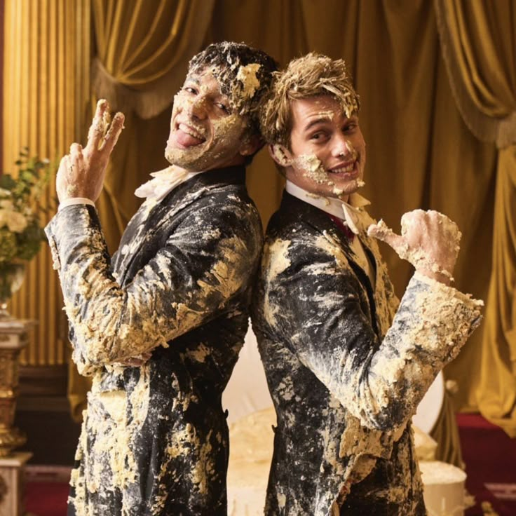
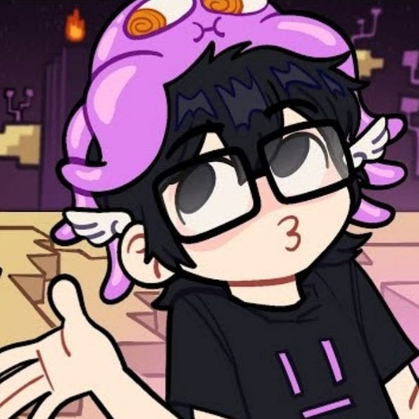
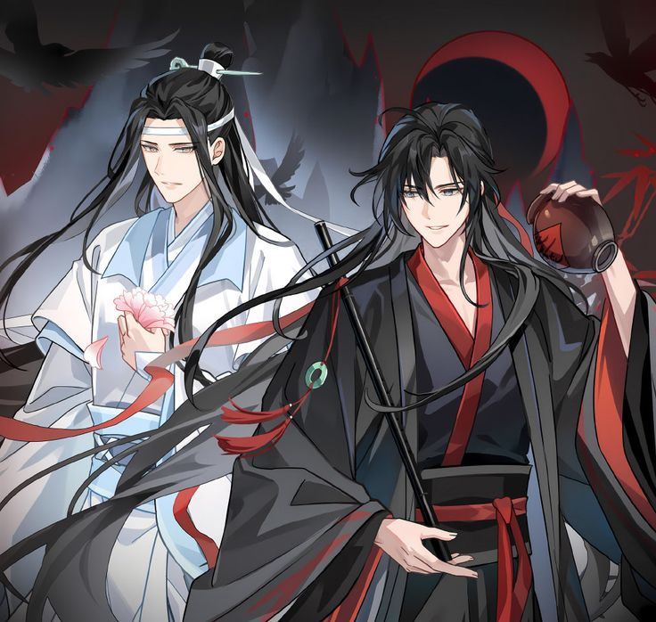
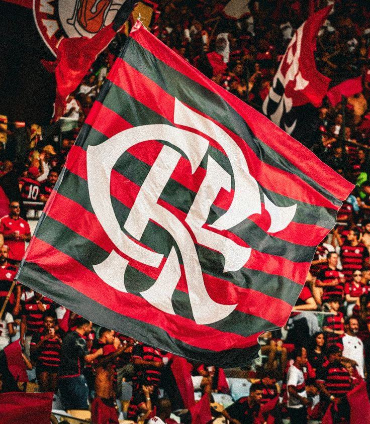
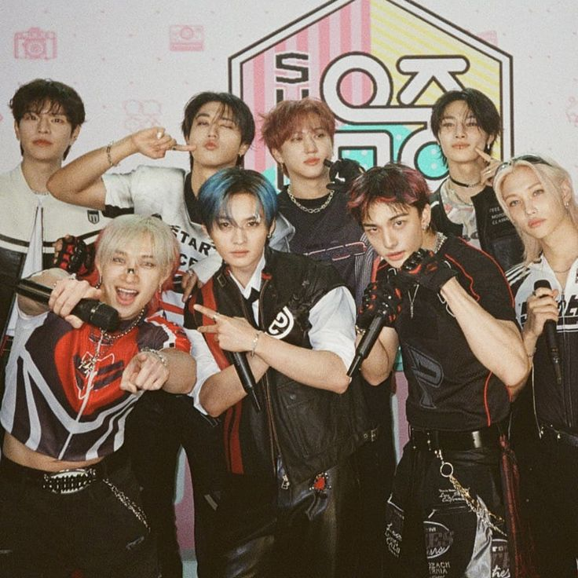

castiel/amor doce
quer saber mais sobre mim? pois ai vai!
Meu nome é Paola Raissa, desde pequena eu queria trabalhar na área da saúde, porém, um dia eu comecei a fazer muitos edits diferentes. Foi ali, em meio a tantos pngs e camadas, que eu entendi: era com aquilo que eu queria trabalhar. Entrei em Informática na escola EEEP principalmente pela procura de ter um curso no currículo, para que futuramente eu possa ingressar em uma faculdade de design gráfico. Desejo me mudar para São Paulo e entrar na universidade da cidade, a USP, no curso, claro, de design gráfico. Minha ideia inicial seria um intercâmbio para Canadá, mas, mesmo que não devemos desistir de nossos sonhos, coloquei São Paulo como plano A, pois parecia algo mais alcançável. Quero me formar e trabalhar com pôsteres de álbuns de música. Gosto principalmente de designs com muita informação, vários pngs, porém não muito colorido, seguindo apenas uma paleta de cor fixa. Espero que meus sonhos se realizem.


Algumas curiosidades que considero importante!!
• Eu sou bigênero! Me identifico com os dois gêneros e fico
confortável com os dois pronomes!
• Gosto muito de coisas artesanais, feitas com as mãos.
Coisas de cerâmica, crochê... e.t.c.
• Eu gosto muito de desenhar, gosto de vários estilos e
odeio ficar presa em somente um.
• Eu escrevo muito, desde desabafos até histórias.
• Eu adoro colecionar todo tipo de coisa, até pulseiras
de entradas de evento até uma pedra que achei bonita na rua.
• Meu sonho era ser cabeleireira.
• Desde pequena, gosto muito da Twilight Sparkle de
My Little Pony.
• Eu quero viajar o mundo e conhecer várias culturas
no futuro.
• Gosto muito de gatos e tenho uma chamada Lina!
(Eu não sabia o sexo dela e chamei ela de Lino por muito tempo)
alguns designs que eu fiz:
(link)
castiel/amor doce

xlov
seijinho

arcane
heated rivalry

vermelho, branco e sangue azul

saiko

mo dao zu shi

flamengo

stray kids